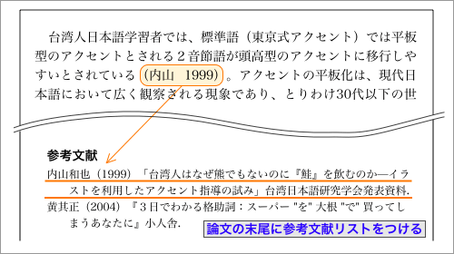
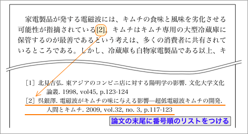
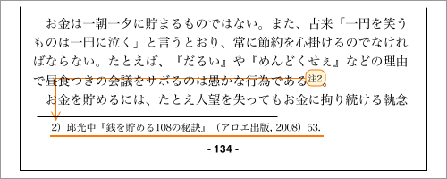

標準スタイルとは？
論文は、自分（たち）の研究の成果をまとめて発表するものであると同時に、他の人たちの研究の資料ともなるものである。研究者がお互いの論文を、自分の研究のためのデータとして利用するときには、論文がデータとして利用しやすい形になっているほど研究の効率も高まると考えられる。
たとえば、申込用紙（アプリケーションフォーム）やデータベースのカードのように、特定の項目が用意され、特定の内容が特定の順序と書式で書かれていれば、利用者にとっては合理的なものだといえるだろう。
そのため、英語の論文では、論文の書き方（スタイル）に包括的なガイドライン（マニュアル）がつくられている。これを、論文の標準スタイルという。
標準スタイルの例
現在、世界中で広く用いられている学術論文の標準スタイルとしては、シカゴスタイル・MLAスタイル・APAスタイル・CSEスタイル・AMAスタイル・NLMスタイルなどがある（ただし、分野や学会によって、これらとは異なる独自のスタイルが用いられることもある）。
- シカゴスタイル（CMOS／CMS）
-
- 主体：シカゴ大学出版会によるスタイル
- 分野：人文科学分野／人文系の一般書籍
- 領域：歴史学、語学など
- MLAスタイル
-
- 主体：米国現代語学文学協会によるスタイル
- 分野：人文科学分野
- 領域：文学、言語学、哲学など
- APAスタイル
-
- 主体：アメリカ心理学会によるスタイル
- 分野：社会科学分野
- 領域：心理学、行動学、社会学、経営学、その他の学際的領域
- CSEスタイル（旧CBEスタイル）
-
- 主体：科学編集者評議会によるスタイル
- 分野：自然科学分野／科学系の一般書籍
- 領域：生物学、生命科学など
- AMAスタイル
-
- 主体：米国医師会によるスタイル
- 分野：自然科学分野
- 領域：医学など
- NLMスタイル
-
- 主体：米国国立医学図書館によるスタイル
- 分野：自然科学分野／電子文献
- 領域：医学、生物学など
これらの標準スタイルについては、マニュアルが出版・公開されている。なお、マニュアルは定期的に更新・改定されるので、できるだけ最新版のマニュアルを使うようにしなければならない。
↑スタイル・マニュアル（上段左からMLA、シカゴスタイル、APA）
日本語論文の標準スタイル
日本語論文の場合、主に理科系の論文では独立行政法人科学技術振興機構（JST）が作成する「科学技術情報流通技術基準」（SIST：シスト）が標準スタイルとして利用されている。
一方、文科系の学術誌や論文集では、特定の標準スタイルへの準拠や細かな書式を指定せずに、バックナンバーの書式にあわせて書くように求める場合が多い。そのため、文科系（特に人文科学、とりわけ文学系）の論文では、所属する学会や学派・学閥によってさまざまな論文の書き方が混在している。
引用での出典の表示
論文の中に、他の論文や資料を引用するときには、出典を明示するのがルールである。
論文で出典を表示するときには、『ハーバード方式（挿入による参照）』によるのが一般的である。なお、自然科学の分野では『バンクーバー・システム』、縦書きの論文や史学・文学の分野では注釈によって書誌の概要を示す旧来のシステムが用いられることもある。
- ハーバード方式 Harvard referencing
挿入による参照 Parenthetical referencing
- 論文末に参考文献リストをつけ、本文内に著者名と発行年をカッコ書きで挿入することで出典を表示する方式

- バンクーバー・システム Vancouver System
- 論文末に通し番号付きの参考文献リストをつけ、本文内では通し番号によって出典を表示する方式

- 旧来のシステム Documentary Note System
- 傍注や脚注によって参考文献を直接示す方式。そのため、末尾に参考文献リストをつけないことが多い
